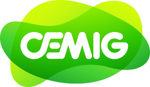

Projeto Interdisciplinar "TI Verde"1ºA-N DS - Etec de Guarulhos

Política Ambiental na CEMIG
É por meio das nossas políticas ambientais que buscamos utilizar de forma racional todos os recursos naturais, com a devida preservação do meio ambiente. Por meio dos princípios da Política Ambiental, definimos também a nossa postura perante a natureza e sua preservação, nos auxiliando a estabelecer normas e mecanismos que possibilitam aos empregados e parceiros transformar essa postura em ações.
Dividida em sete princípios, nossa Política Ambiental evidencia as metas que vão orientar nossos trabalhos de redução, compensação ou eliminação dos impactos ambientais gerados pelas atividades da empresa, para garantir o desenvolvimento sustentável. Conheça os sete princípios da nossa Política Ambiental:
Princípio n.º 1: Nós da Cemig planejamos, projetamos e desenvolvemos nossas atividades, levando em consideração as implicações relativas ao meio ambiente.
Princípio n.º 2: Administramos preventivamente as implicações ambientais de nossas atividades.
Princípio n.º 3: Administramos os impactos ambientais significativos de nossas atividades, adotando medidas mitigadoras e práticas adequadas.
Princípio n.º 4: Buscamos a valorização ambiental viável que pode ir além da administração de impactos exigidos pela legislação, sem, contudo, assumir funções de responsabilidade de outros órgãos dos Governos Federal, Estadual ou Municipal.
Princípio n.º 5: Consideramos enriquecedora a participação das comunidades afetadas ou interessadas, durante as fases de projeto de suas atividades.
Princípio n.º 6: Além do cumprimento das leis, regulamentos e políticas governamentais aplicáveis, podemos complementá-los com nossas próprias regras, se necessário.
Princípio n.º 7: O respeito e a valorização do meio ambiente constituem responsabilidade de todos os nossos empregados, parceiros e subsidiárias.